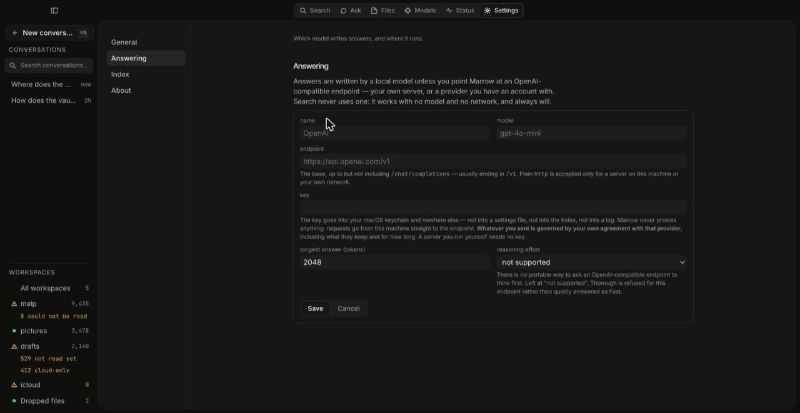

Guides / Add a cloud model when you have no GPU
Guide 4
Local generation is MLX on Apple Silicon, and there is no CPU path to be slow on — which would exclude a lot of machines entirely. So Marrow takes one OpenAI-compatible endpoint instead, behind exactly the same interface. Search never uses it either way.
Settings is grouped into four screens — General, Answering, Index and About — so the endpoint is not something you scroll past index counts to find. Choose Answering, then Add an endpoint.

| Field | What to put in it |
|---|---|
| name | Whatever you want to see on the answer's label — OpenAI, work vLLM. |
| model | The model id the endpoint expects, exactly as it spells it. |
| endpoint | The base URL up to but not including /chat/completions — usually ending in /v1. Plain http is accepted only for a server on this machine or your own network. |
| key | Goes into your macOS keychain and nowhere else. A server you run yourself needs none. |
| longest answer | A token cap. It defaults to 2048. |
There is a sixth, reasoning effort, and its default is
not supported — because there is no portable way to ask an
OpenAI-compatible endpoint to think first. Left there,
Thorough is refused for this endpoint rather
than quietly answered as Fast. Set it only if you know your provider
honours it.
Once an endpoint is configured, the question and every excerpt it cites are sent there. Marrow never proxies anything — requests go from your machine straight to the endpoint — but what happens at the other end, including what they keep and for how long, is governed by your own agreement with that provider.
The About screen states this in one sentence and changes that sentence depending on what is actually configured. With no endpoint it says answers are written here and nothing is sent anywhere; with one it names the provider and the base URL. Neither branch is assumed to be the safe one.
Every generation carries a boundary label, and it is computed from the address the request actually resolved to, not from what you typed into the field. Removing the endpoint under Answering puts you back on the local path.
Anything OpenAI-compatible, which in practice is most things: OpenAI, OpenRouter, Together, Groq, or a server you run yourself — vLLM, LM Studio, llama.cpp, Ollama. Anthropic's models are reachable through OpenRouter today; its native API is parked on the tracker rather than built.
If you are running a local server on this machine, the Models page also detects an Ollama or LM Studio instance if one is already listening, and says which port it found it on.
Search. Keyword and filename search work with no model, no GPU and no network, and are meant to keep working that way. Matching on meaning is added on top of matching on words; it never replaces it.
The evidence rules. Retrieved content is still wrapped in the same labelled envelope before it reaches a remote model, files Marrow wrote are still excluded from evidence, and citations still resolve to a page, a cell or a line. The model is the replaceable part.